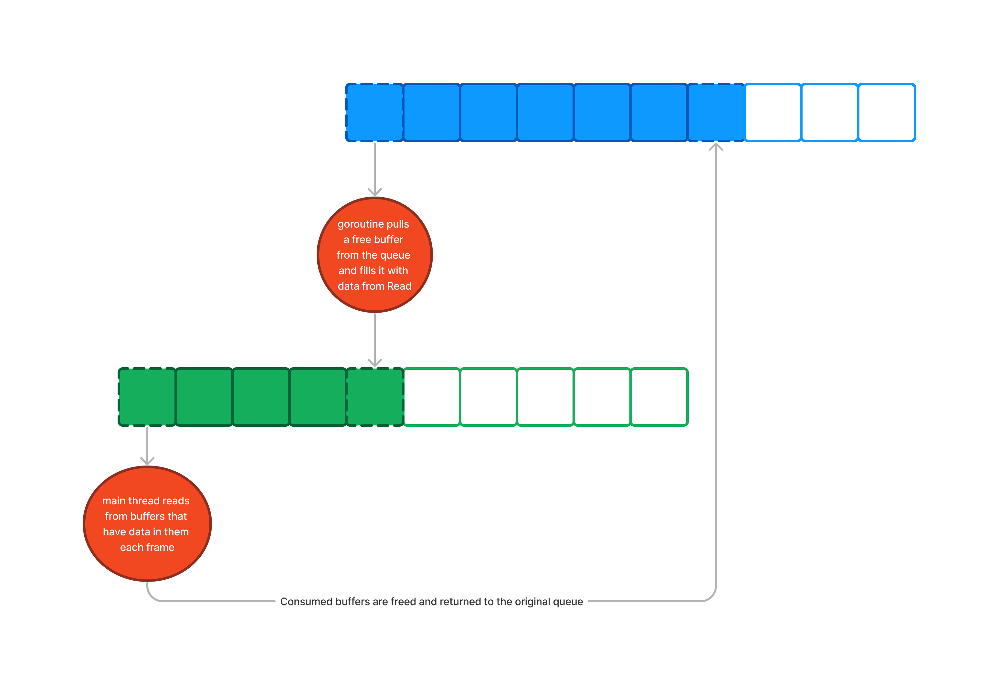
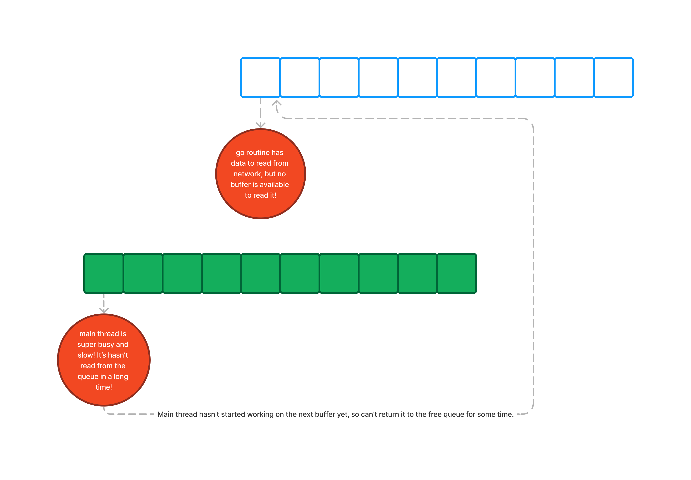

Networking a Game with Go
Table of Contents
- Introduction and Motivation
- Socket Primer
- Game Loops and Non-Blocking Sockets
- Implementing this in go
- Another Way: Threads (Goroutines)
- The Channel Overreach
- Introduction to Multithreading: Mutexes
- Mutexes and LatestData
- Conclusion: A Light Touch Is Often Best
- Appendix A: Table of Relevant System Calls
Introduction and Motivation
As a game developer and teacher, I've spent a fair amount of time messing around with low-level networking code in C++. I've gained enough experience with it that I've developed a personal house style, which tends to be more C-like than C++-like. When writing network code, you don't get the benefit of a lot of abstractions – things like polymorphism and private class data tend to become libailities instead of advantages. You're back to basics, manipulating streams of bits and bytes.
At the same time, I've been passively intrigued by Go, a programming
language I briefly used professionally and that I've been eager to
revisit. It dawned on me that writing a small networked game in Go
would be a good opportunity to improve my familiarity with the
language. Two features of Go in particular stuck out to me as useful
for this exercise. One is the syscalls package, whose existence
means I can write functionally the same program as I would in C, but
with guaranteed memory safety and a stronger type system.
The second relevant feature was Go's Reader and Writer interfaces, which are perfect for reading streams of bytes. When reading from/writing to sockets (or strings, or all kinds of things) in C or C++, I tend to do things like this:
char buffer[4096]; size_t write_head = 0; write_head += serialize_object(obj1, &buffer[write_head], sizeof(buffer) - write_head); write_head += serialize_object(obj2, &buffer[write_head], sizeof(buffer) - write_head); write_head += serialize_object(obj3, &buffer[write_head], sizeof(buffer) - write_head); // ... serialize more things ... send(conn, buffer, write_head);
This is a really common pattern in my code but note what's missing – there's no way to expand the buffer, and the exact method of keeping track of the write head is a little ugly and overly explicit. Go's Readers and Writers take care of exactly that problem. For example, here's the same thing implemented in Go:
var buffer bytes.Buffer // Each call to serialize_object calls buffer.Write(), expanding the // buffer if necessary. serialize_object(obj1, buffer) serialize_object(obj2, buffer) serialize_object(obj3, buffer) // ... serialize more things ... send(conn, buffer)
I wrote an extremely simple game-like thing (more of a technical proof of concept than an actual game), and even in that small exercise I learned I lot. This article serves to document some revelations I had – as well as some missteps I made – during the process.
Socket Primer
For those not acquainted, sockets are the things that let you write to and read from the network. They're a lot like files, except they operate on the network instead of the file system. A simple example would be:
int s = make_socket_and_connect_to_address("63.141.25.53:20000"); char buffer[4096]; int n = recv(s, buffer, sizeof(buffer)); if (n == 0) { printf("Connection closed.\n"); } else { printf("Read %d bytes\n", n); }
And then buffer will contain n bytes of data, which you then use
however your program wants to use it.
Notice the deliberate similarity to reading from a file:
int f = open("./my_file.txt"); char buffer[4096]; int n = read(s, buffer, sizeof(buffer)); if (n == 0) { printf("Reached end of file.\n"); } else { printf("Read %d bytes\n", n); }
It may seems surprising that both of these operations, which in priciple do such different things, can have such similar interfaces. In fact, they're more similar than they may appear – both involve the program waiting for data to come in through some external means, and then continuing only when that data becomes present. This pattern is called blocking.
Blocking 101
When you read from a file, a lot of things have to happen behind the scenes. The operating system communicates with the hard disk drive where your file's data is contained. That disk drive then spins the magnetic platter where the data lives, aligning it with the electro-magnetically sensitive read head, which then scans a block of data. It then sends a message back to the operating system that the data has been read. The operating system copies that data into your program's memory via the buffer you provided. Then, the function returns.
This feels blazingly fast, and it often is – for small files, the time this entire process takes is usually completely imperceptible. But as far as your CPU is concerned, it is agonizingly slow. The CPU can perform at least thousands, likely millions, of operations during that time, and instead it's doing… nothing1. Just hanging around until the slow hard drive gets back to it.
Just like with a file, when you call recv() on a socket, the
operating system waits for the network device to come back with some
data. However, networks are a little different – unlike hard drives,
which are reaching for existing files that have all the bytes sitting
around, just itching for someone to read them, sockets will wait for
another machine to send them information. Depending on the exact
program, other machines may decide to wait a long time before sending
data over. So, the time it takes for recv() to return depends
entirely on the whims of another machine!
I make this sound bad – and we'll see below why it really is a
problem for games – but this is all to make programmers’
lives easier and machines more efficient. If recv() blocks – that
is, it waits as long as necessary for data to come in before returning
– that means you can write programs that read something like this:
- Receive some data from the server.
- Interpret that data as HTML.
- Render the HTML document to the screen.
instead of like this:
- Try to receive some data from the server.
- If the server hasn't sent any data yet, I guess hang around or something. Maybe play hopscotch or frisbee, if the weather's nice?
- Check back on if the server sent some data.
- If they still haven't, go back to step 2.
- If they have, interpret this data as HTML
- Render the HTML document to the screen.
Not only is this unnecessarily complex for this task, it also opens the door for careless programmers to do something unproductive on step 2 and fail to yield the CPU to other programs, where it could be doing useful work (see 1 for more info on this). So making sure sockets block – wait for data to come in – instead of returning immediately is usually a good idea. But games are not usual pieces of software.
Game Loops and Non-Blocking Sockets
Games are unlike most other programs in that they keep doing stuff even if the user isn't pressing any buttons. If Mario stands still, an enemy will walk into him and the player will lose. Typically, games work by updating the world some small amount very frequently, taking the player's input into consideration at each update. Then, the game draws the world in a way that makes it clear to the player what's going on.
In code, a game loop looks like this:
while (!quit) {
PollInput();
UpdateWorld();
RenderWorld();
}
Now let's add some network code. Oftentimes, player's computers act as clients connected to a server, and the server's simulation is considered the "real" or "authoritative" state of the game. So, every so often, we'll want our player's game to read from the socket that's connected to the server, so that the client can sync up with the server's state.
Network info basically functions like input, it's just input from a
another computer instead of from the user. So we'll add code to read
from our socket in PollInput():
void PollInput() { CheckControllerState(); char buffer[4096]; int n = recv(serverConnection, buffer, sizeof(buffer)); ProcessServerPacket(buffer, n);
But wait, this won't work – we typically want our update loop to run
around 60 times per second2. recv(), however, will block until
data comes in. So our game will completely stop until another
computer sends us network data, taking our ability to run this loop at
least 60 times a second completely out of our hands.
There's a simple solution to this. Sockets, like other files, can be configured to always return immediately, and to simply signal if they actually had any data or not. Once we set a socket to non-blocking mode3, we can check the return value to see if it actually returned data or if none was available.
Implementing this in go
Using Go to add nonblocking sockets is pretty straightforward. Here's
a hypothetical doNetRecv() function, which can be safely called
every iteration of our update loop without locking the whole thing up:
func doNetRecv() { buffer := make([]byte, 4096) n, err := syscall.Read(connFd, buffer) if err != nil { if err == syscall.EAGAIN || err == syscall.EWOULDBLOCK { // No data available. That's ok, just move on. return } else { panic(fmt.Errorf("error: %v", err)) } } packet := buffer[:n] processPacket(packet) }
Note that we have to open our sockets using system calls ("syscalls")
instead of using the net package to achieve this. For the curious, Appendix A has a table showing the relevant system calls and
their POSIX counterparts. The important thing to note is that our
socket is stored as an int and is read from/written to using
syscall.Read() and syscall.Write(), rather than the usual
io.Reader.Read() interface.
As you can see, testing whether a nonblocking socket received data is as simple as checking the err value – if it's EAGAIN or EWOULDBLOCK (it can be either on different systems for historical reasons), there's no data ready for us. Other errors are legitimate errors and should be handled as such. If we didn't get an error, then we got data and can read it.
One can use this function by simply calling it every frame. Usually, network sends and receives happen less frequently than once per frame (data doesn't usually come in quite that often), so we might call this 20 times a second instead of 60. I found Go's ticker class to be very helpful for this:
select { case <-netSendTicker.C: // send data over the net, if enough time has elapsed. doNetSend() case <-netRecvTicker.C: // try to receive data over the net, if enough time has // elapsed. doNetRecv() // If it's not time to check anything, continue to the rest of the // frame. Without this "default" condition, the select block will wait // until one of the above two timers sends an event. default: } // Do our usual update loop update() render()
Another Way: Threads (Goroutines)
The other way to get around blocking operations (besides making them not block anymore) is to devote a thread to the operation. This is pretty easy with goroutines:
conn := setUpConnection() go func() { n, err := conn.Read(buffer) if err != nil { panic(err) } packet := buffer[:n] // ... still need to do something with packet so the rest of // our game can use it ... }() beginMainLoop(conn)
Boom, now we'll get data whenever it comes in, regardless of what our other threads are doing. The tricky part is coordinating how to use this data.
Games are often inconvenient to multithread. There are a few principles of a basic game loop that combine to make this a reality:
- Each game object within the game is valid before and after calling
update(), but is invalid in the middle of anupdate()call. - Within each game object's
update(), it may (and, in practice, often does) need to access and/or modify the state of an arbitrary number of other game objects. - Therefore, in the general case, no two game objects can be updating at the same time.
What this usually comes down to is updating each object in the world one at a time on a single thread. Adding a mutex to each individual object is a recipe for deadlock (as soon as two objects try to access each other, it's game over), and adding a mutex to the entire world is no better than doing the whole update on a single thread.
Carefully considering how we communicate between our goroutines is paramount. If we try to have each thread lock and modify the world, we'll end up with a very complicated and difficult to predict multi-threaded program with the same throughput as a single-threaded program. Instead, we'll keep the main thread as the only one that's allowed to modify the world, and use communication with our subordinate threads to dictate what work gets done.
The Channel Overreach
Go channels are a natural choice to facilitate communication between goroutines, and that's exactly what I started out doing:
// Before entering main loop... buffersCount := 10 bufferChan := make(chan []byte, buffersCount) inMsgChan := make(chan []WorldMessage, buffersCount) for range buffersCount { bufferChan <- make([]byte, 4096) } go func() { // Read buffers forever for buffer := range bufferChan { // Expand buffer to its maximum capacity, // undoing the truncated done by buffer[:n]. buffer = buffer[:cap(buffer)] n, err := conn.Read(buffer) if err != nil { panic(err) } inMsgChan <- buffer[:n] } } // ... in main loop ... select { case buffer<-inMsgChan: readPacketIntoWorld(world, buffer) bufferChan <- buffer default: }
The idea is that we have a rotating cast of buffers. As long as there are buffers available in the queue, our read goroutine will grab one and use it to read incoming data. Then, after the main thread processes the data, the buffer goes back in the queue.

There are some benefits to this approach. For one, they use channels,
which make communication between goroutines straightforward and easy.
Another benefit is that they don't allocate any additional buffers –
we allocate an arbitrary number of buffers at the beginning and then
cycle those back and forth. The perhaps strange-looking line, buffer
= buffer[:cap(buffer)] expands the buffer to its original 4096-byte
length, undoing the truncation done with the expression buffer[:n].
However, there are some major downsides as well. Something that's not ideal, but not fatal, is that we have to allocate enough space for however many buffers we want to be able to cycle right at the beginning. 10 buffers at 4kb per buffer means we're reserving 40kb, most of which will be unused at any given moment.
Compounding this problem, however, is another, much worse one. Everything in our system works fine as long as the main thread keeps up with the read thread. That is, if the main thread is consuming buffers faster than the read thread is producing them, everything will work fine. But if the server is sending data faster than we're processing our update loops, the read thread will stall, waiting for the main thread to consume and free up the buffers it has written to.

Finally, in this specific case, it's actually a huge waste of time to process every packet that comes in – if multiple packets have come in, we only care about the latest one, because each packet contains the complete state of the world.
Looking at this holistically, we can catch a whiff of the basic problem: we're using a queue when a single variable would suffice. From that, the clear solution is to forego channels entirely. Instead of using fancy (and convenient!) language features, we're going to get back to basics and use one of multithreadings primitive types.
Introduction to Multithreading: Mutexes
When multithreading, the most commonly used primitive synchronization object is the mutex (from "MUTual EXclusion", much like how pixel is from "PICture ELement"). These prevent a resource from being used by two different threads concurrently.
As a quick example, take the following C++ code:
void add(int* p, int delta) { /* Load the value of n */ int n = *p; /* Calculate the new value */ int sum = n + delta; /* Store the new value */ *p = sum; }
Say *p = 0 and two threads execute this function at once, one with
delta = 2 and one with delta = 3. Assume the correct behavior is
that, after both threads complete, we want *p = 5. That might
happen, if our threads play nice. But what could happen is this:
| time | Thread 1 | Thread 1 Comment | Thread 2 | Thread 2 Comment |
|---|---|---|---|---|
| 0 | int n1 = *p |
Set n=0 | int n2 = *p |
Set n=0 |
| 1 | int sum1 = n1 + 2 |
Caluclate sum = 2 | int sum2 = n2 + 3 |
Calculate sum = 3 |
| 2 | *p = sum1 |
2 is stored in *p. | ||
| 3 | *p = sum2 |
3 is stored in *p |
Oops! Our computer just calculated 0 + 2 + 3 = 3. That's no good!
For the sake of example, let's see what happens if we use a mutex:
std::mutex p_lock; void add(int* p, int delta) { /* Lock the mutex. Threads that try to lock() a locked mutex will block until the mutex is freed. */ p_lock.lock(); /* Load the value of n */ int n = *p; /* Calculate the new value */ int sum = n + delta; /* Store the new value */ *p = sum; /* Unlock the mutex, allowing other threads to operate on this data. */ p_lock.unlock(); }
If the threads ran like they did in the pseudocode above, this would happen:
| time | Thread 1 | Thread 1 Comment | Thread 2 | Thread 2 Comment |
|---|---|---|---|---|
| 0 | p_lock.lock() |
Thread 1 acquires lock. | p_lock.lock() |
Can't acquire lock because thread 1 already has it. Thread 2 blocks. |
| 1 | int n1 = *p |
Set n = 0 | ||
| 2 | int sum1 = n1 + 2 |
Calculate sum = 2 | ||
| 3 | *p = sum1 |
Store *p = 2 | ||
| 4 | p_lock.unlock() |
Release lock | Lock now acquired. | |
| 5 | int n2 = *p |
Set n = 2 | ||
| 6 | int sum2 = n + 3 |
Set sum = 5 | ||
| 7 | *p = sum2 |
Store *p = 5 | ||
| 8 | p_lock.unlock() |
Release lock |
This prevents our threads from mangling data by accessing it concurrently. It also presents a downside, which is that threads which are waiting for mutexes to unlock do no work. If you're careless with mutexes, you can end up nullifying any potential performance gains by keeping your threads busy waiting for each other rather than doing work. This is exactly what happens in the example above, which runs no faster than a single-threaded program.
Mutexes and LatestData
Now we have the tools we need to improve our program by moving away from channels. To recap, we have two threads that want to access the same data – a message that has come in from the server – and we used a straightforward but inefficient and unstable system to coordinate that communication. Since we only care about the latest data that came in, here's our new plan:
- Create a variable to hold latest message from the server
- Whenever we read data on our read thread, overwrite that variable
- When the main thread updates, and if the variable changed since the last time the main thread read it, use it to overwrite the world state.
It's important that we only use the server data if it changed from the last time we used it to update the game world. Otherwise, we'll rewrite the world with stale data until the next server update comes in, preventing us from simulating more than a single frame ahead.
Clearly, we don't want the read thread to write to the message variable while the main thread is reading, so we'll need a mutex to coordinate the threads. We'll also need a flag that tells the main thread something changed. The read thread will raise this flag when something occurs, and the main thread will clear the flag when it reads.
Here's the solution I came up with:
type LatestData struct { hasChanged bool data WorldMessage l sync.Mutex } func (m *LatestData) Store(msg *WorldMessage) { m.l.Lock() defer m.l.Unlock() m.data = *msg m.hasChanged = true } // If m has changed since the last Load, loads the current value of m // into msg and returns true. Otherwise, does nothing and returns // false. func (m *LatestData) Load(msg *WorldMessage) bool { m.l.Lock() defer m.l.Unlock() if !m.hasChanged { return false } *msg = m.data m.hasChanged = false return true }
Then we integrate it into our game like so:
// Before entering main loop latestMessage := &LatestData{} // Read thread go func() { buffer := make([]byte, 4096) for { n, err := conn.Read(buffer) if err != nil { panic(err) } var message MessageData message = parseMessage(buffer) latestMessage.Store(message) } } // ... in update loop ... var message MessageData if latestMessage.Load(&message) { setWorldStateToMessageData(message) } // ... rest of update loop
And there we go! Now our two threads can communicate independently of each other. The read thread will read data as fast as it comes in, and the main thread will use data only if it becomes relevant. Because our threads are sharing data, we have to be extra careful4, which is why the Go documentation recommends using channels and communication5 instead of using mutexes directly.
Conclusion: A Light Touch Is Often Best
Besides providing a (hopefully approachable) introduction to multithreading, game loops, and how they can interact, there's a more general lesson we can extract from this adventure: It's usually best to make small, incremental changes to a design than it is to jump to entirely new frameworks. The whole process started by noticing the value of Go's basic facilities and modifying a straightforward C program to improve that program's robustness. We further improved the program using goroutines and mutexes, but first we made a misstep in attempting to use the language's fanciest, sexiest features rather than using the right tool for the job.
I'm reminded of a comment the venerable game programmer John Carmack once made about programming in a functional style: "You should do it whenever it is convenient, and you should think hard about the decision when it isn’t convenient." I think this is a fantastic general philosophy – when tools are useful, you should make them the default option. When they might cause trouble, think hard about it, and then decide. Note that he didn't recommend what many functional programming enthusiasts recommend: Switch immediately to the most sophisticated purely-functional language you can and use that to get everything done from now on. This straw-man caricature of FP enthusiasts is easy to recognize for the overreach that it is – yet still, I regularly find myself tempted by this same philosophy. Whenever I happen upon a hammer, I try to reinvent the world around me to be full of nails. It can be hard to look at your problem and determine the minimal change necessary to solve it, but that skill is perhaps the most crucial of all for members of my profession.
Appendix A: Table of Relevant System Calls
Posix functions are written in the usual man page format – socket(2) means "a function named socket, which is found on section 2 of the man pages." You can find descriptions of these syscalls by searching on man7.org, for example.
| Go syscall | Equivalent Posix function | Use |
|---|---|---|
| syscall.Socket | socket(2) | Creates a socket |
| syscall.Connect | connect(2) | Connects a socket to a given address |
| syscall.Close | close(2) | Closes a file (including a socket) |
| syscall.SetNonblock | fcntl(2) | Sets a file as non-blocking (including a socket) |
| syscall.Bind | bind(2) | Associates a socket with a given address |
| syscall.Listen | listen(2) | Allows a socket to receive connections |
| syscall.Accept | accept(2) | Waits (blocks) for a corresponding connect call, then returns a new socket representing that connection |
| syscall.Read | read(2) / recv(2) | Reads data from a socket |
| syscall.Write | write(2) / send(2) | Writes data to a socket |
Footnotes:
Really, the CPU keeps working – it's only this particular program that stops. The operating system has the CPU chew through some other program's task while waiting for the disk drive to respond. And if no other program needs to do work, then your CPU really does get to take a little nap and save on power consumption for a little bit!
60 frames per second that matches the refresh rate of most commercial monitors, so drawing less frequently than that means we're missing an opportunity to show the player what the game currently looks like. Plus, faster updates mean smaller increments for updating the game state, which leads to a more responsive game.
The exact way to set this mode is a little ugly to look at in
C. The short answer is "use fcntl()". The long answer, while only 5
lines of code, is visible on stack overflow, which is reproduced in a
modified form below. Mercifully, Go provides the function
syscall.SetNonblock(fd int, blocking bool) to legibly change this
setting in a single line.
int flags = fcntl(fd, F_GETFL, 0); flags = blocking ? (flags & ~O_NONBLOCK) : (flags | O_NONBLOCK); fcntl(fd, F_SETFL, flags);
In fact, there's actually still an unaddressed issue here – we
didn't specify how we copy data into the WorldMessage struct. It's
very important that we make sure WorldMessage doesn't share data with
the read thread's buffer variable, or else we'll need an additional
lock for buffer. For example:
type MessageData struct { header int32 body []byte } // Doing this makes body share the underlying array of buffer -- // writes to buffer will change the data read from body messageData.body = buffer[headIndex:] // Instead, if we do this, we can keep the data in buffer and in // messageData independent of each other. copy(messageData.body, buffer[headIndex:])
I'm not sure exactly what they mean by "communication", here.
The full quote from the sync library is "Package sync provides basic
synchronization primitives such as mutual exclusion locks. Other than
the Once and WaitGroup types, most are intended for use by low-level
library routines. Higher-level synchronization is better done via
channels and communication." (emphasis mine). Channels I understand,
but what is communication besides the exact synchronization primitives
described in the sync library? If anyone knows, please reach out to
me!